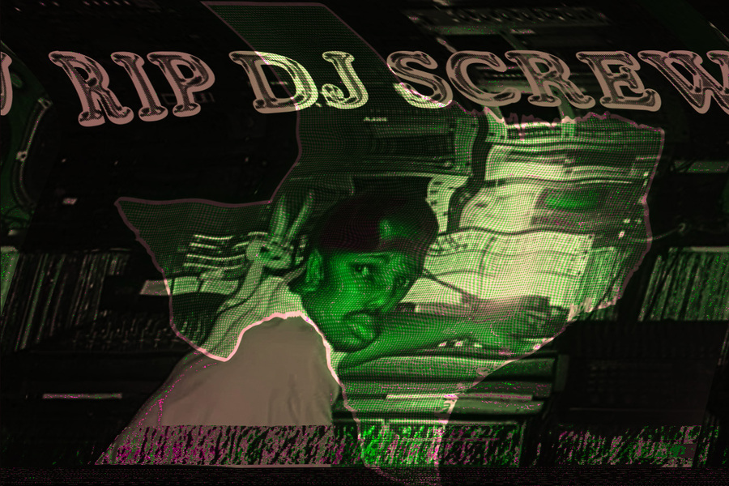
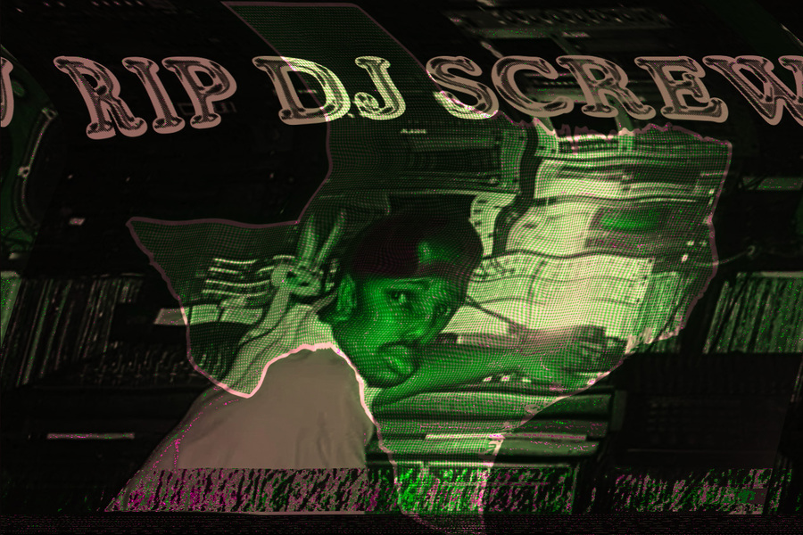

RIP DJ SCREW
Gallery
 

Project Description
This project is a tribute poster series celebrating the legacy of DJ Screw, the pioneer of the chopped and screwed sound. The posters blend typography with vibrant, distorted imagery to capture the unique, hypnotic essence of his music. Each color variation represents a different side of his iconic style.
The imagery was intentionally distorted to reflect the chopped and screwed style, and was created by manipulating the photos using Audacity rather than traditional photo editing software like Photoshop.
My Role
Typographic Designer, Visual Artist
Skills + Tools
Audacity (Audio Manipulation), Typography, Color Theory, Photoshop